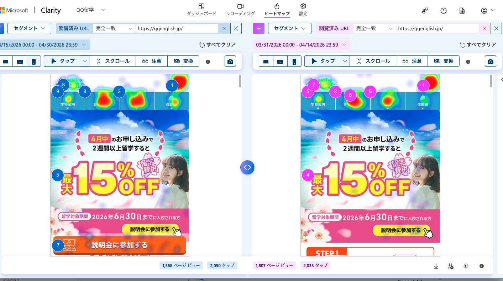
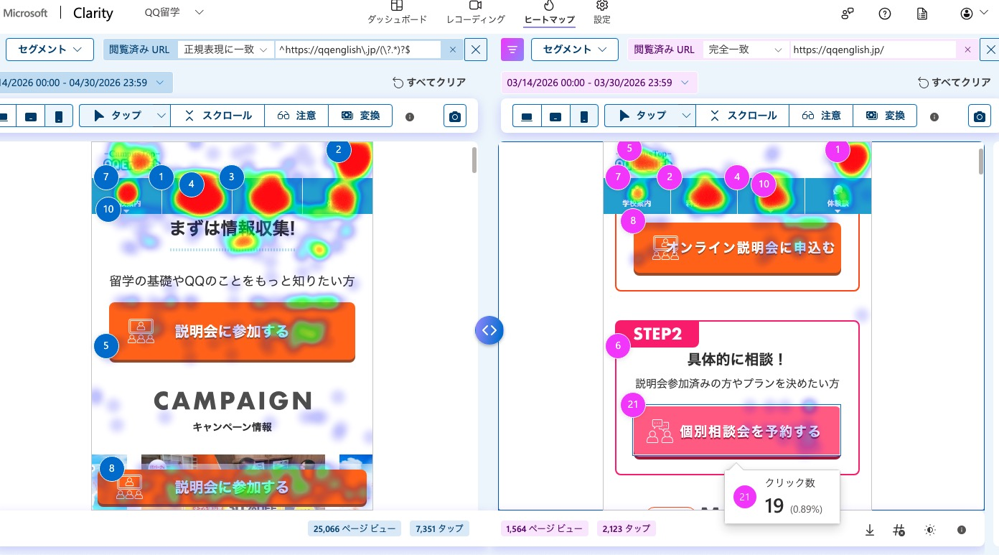

①
FVで約4割が離脱している
スクロール5%時点で37%が去っています。FVがキャンペーンバナー主体の設計になっており、「次に何をすべきか」がユーザーに伝わっていないことが原因と考えられます。
②
ページ中盤の差別化コンテンツが読まれていない
比較表・費用シミュレーション・カランメソッドなど、QQの強みを伝える重要コンテンツが中盤（スクロール15〜44%）に集中していますが、この区間の滞在時間はほぼゼロです。「良いコンテンツがあるのに伝わっていない」状態です。
③
CTAの設計がユーザーの検討段階に合っていない
現在のCTA（説明会1ボタン）は「説明会に参加する気持ちがすでにある人」しか押せません。「まだ迷っている人」「個別に相談したい人」の受け皿がなく、取りこぼしが発生しています。Clarityの同条件比較で、2ボタン構成の方がクリック率が35%高いことが実証されています。
なぜこれが最優先か（根拠）

▲ Clarity比較画面。左：CTA1つ（4/15〜4/30）、右：CTA2つ（3/31〜4/14）

▲ CTA2つ時代のFV構成。STEP1・STEP2の段階設計。個別相談ボタンに19クリック（0.89%）確認。
📌 【画像を挿入してください】
左：_2026-05-07_20_34_42.jpg（比較画面）
右：_2026-05-07_20_29_58.jpg（CTA2つ詳細）
| 条件 | 期間 | PV数 | FV CTAクリック合計 | クリック率 |
|---|
| CTA1つ（現在） | 4/15〜4/30 | 1,568PV | 34クリック | 2.17% |
| CTA2つ（以前） | 3/31〜4/14 | 1,607PV | 47クリック（29+18） | 2.93% |
✅
PVがほぼ同数（1,568 vs 1,607）という理想的な条件での比較で、2ボタン構成が35%上回りました。URLフィルター・期間ともに統一した上での結果であり、信頼性の高いデータです。
具体的な変更内容
ボタン文言のパターン案
推奨：不安解消型
ボタンA「まずは無料説明会を聞いてみる」
ボタンB「費用・プランを個別に相談する」
パターンB：緊急性訴求型
ボタンA「無料説明会に参加する（週6回開催）」
ボタンB「7・8月は早めに→個別相談する」
パターンC：ハードル下げ型
ボタンA「まず話を聞くだけでOK→説明会へ」
ボタンB「具体的に相談したい→個別相談へ」
💡
デザイン上の優先順位を明確にする。ボタンAをメイン（大・オレンジ系）、ボタンBをサブ（やや小・アウトライン系）にすることで「まず説明会」という主導線を維持しながら、個別相談ニーズも取りこぼさない設計にします。
💡
マイクロコピーをボタン直下に追加する。例：「毎週火〜日開催・所要60分・参加無料」など、ボタンを押す前の「小さな不安」を消す一言を添えます。